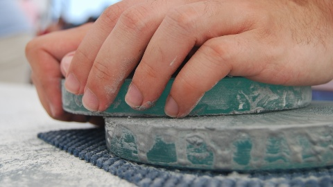
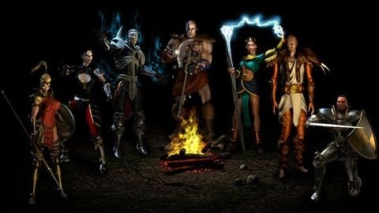
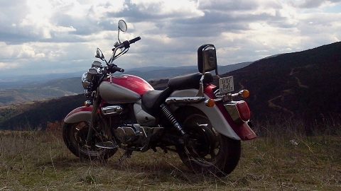

Değerli internet kullanıcıları, kişisel siteme hoşgeldiniz. Ben doğayı ve doğada yapılan her faaliyeti seven bir kişiyim. Fırsat buldukça, güzel memleketimin eşsiz coğrafyasıda, kendimi doğanın huzurlu kollarına bırakıveririm. Orada keşfedilmeyi bekleyen okadar çok şey var ki... Bir kısmı dünyanın güzellikleri olsa da aslında birçoğu da kendimiz hakkında !
Bağlantılar
Bana ait diğer sayfalara, arşivlediğim dosyalara ve takip ettiğim bazı sitelere bu bağlantılardan ulaşabilirsiniz.
Müzik
Ruhumuzun gıdası müziği kim sevmez ki? Çocukluğumda plaklarla, kasetlerle ve radyo ile başlayan müzik yolculuğuma yıllar içinde edindiğim enstrümalar ile devam ediyorum... Devamı...
Aikido
O-Sensei'nin kadim savaş sanatlarından öğrendikleri ile geliştirdiği Aikido, bizleri evrenin enerjisiyle uyumun yollarını aradığımız sonu gelmeyen bir yolculuğa çıkarıyor... Devamı...
Dağcılık
2000 yılında DODAK ile başlayan bu macera adeta benim için bir yaşam biçimi... Klüp eğitimlerini tamamlayıp bir süre eğitmenliğini de yaptıktan sonra TDF eğitimlerine de katıldım... Devamı...
Astronomi
Uzay, son sınır! Bunlar benim astronomi maceralarım. Ömürboyu sürecek bir keşfetme arzusu ve çok uzaklarda gelen o zayıf ışıkları anlamlandırma çabası... Devamı...
PC Oyunları
Her ne kadar kendimi doğa insanı olarak görsem de şehirlerde geçiyor vaktimin büyük bölümü ve şehirde eğlence denilince bilgisayar oyunları benim için bir numaralı seçenek... Devamı...
Chopper
Yıllardır beğendiğimiz motoru sonunda aldık... Hyosung GV250 Aquila, 250cc V-Twin motoru ile 29hp güç üretebiliyor. Artık kasklarımızı taktık mı dilediğimiz yere götürecek bizi... Devamı...
Bilecik çocukluğumuzdaki haline göre epey büyüdü ! Neyse ki bölge coğrafyası büyümesini dizginliyor; sanki masumiyetini korumaya çalışır gibi...
Şimdilerde eski evleri yıkıp apartman dikiliyor yerlerine. Sanki, doğaya karşı kazanamadıkları bu savaşın intikamını şehrin yorgun tarihi dokusundan almaya çalışıyorlar... Bu eski fotoğraftaki yapılardan ise tepedeki vilayet binası ve altındaki müzeye çevirilen eski cezaevi zamana meydan okurcasına dimdik ayaktalar.
Bilecik doğası gereği engebeli bir coğrafya, bu da doğaseverler için keşfedilecek çok yer var demek. Her tepenin ardında yeni bir manzara, yeni bir macera...
Her mevsimi ayrı güzel olan doğasıyla her düzeyde ve her yaştan doğa tutkunu mutlaka kendine göre bir macera bulabilir bu coğrafyada. İster dağcılık yapın ister kanyon geçişi, dilerseniz balık tutun nehirlerinde göllerinde yada fotoğraflayın benzersiz güzelliklerini... Bilecik'in doğası sizleri çağırıyor !
Devamı...
2000 yılında DODAK ile başlayan bu macera adeta benim için bir yaşam biçimi... Klüp eğitimlerini tamamlayıp bir süre eğitmenliğini de yaptıktan sonra Türkiye Dağcılık Federasyonu eğitimlerine de katıldım...
Şimdiye kadar içlerinde Ağrı, Erciyes, Hasan, Kızlarsivrisi ve Aladağlar'da birçok zirvenin de bulunduğu yaz ve kış faaliyetlerinde bulundum, birkaç uzun-duvar denemesi ile birlikte çeşitli bölgelerde onlarca spor ve alpin-spor tırmanışlar gerçekleştirdim.
Fırsat buldukça da dağlara kaçıyorum, Aladağlar'a...
Gölpazarı keşif
Gölpazarı - Söğütcük köyü yakınlarındaki yeni ve gözde tırmanış bahçesine bir keşif gezisi gerçekleştirdik geçenlerde...
Amacımız hem bölgeye ve rotalara ulaşım ile kamp için uygun yerleri belirleyerek bir sonraki gelişimizde sıkıntı çekmemek hem de kapalı bir günü keyifli bir keşifle değerlendirmekti.
Neyse ki Doğan Palut'un "Batı Türkiye Kaya Tırmanış Rehberi" isimli kitabını yanımıza almışdık, çok da iyi etmişiz... Kitaptaki harita ve ulaşım bilgileri ile elimizle koymuş gibi bulduk bölgeyi, vadinin içindeki gizli bahçeyi...
Yalnız aklınızda olsun; aracınızda yeteri kadar yakıt bulundurun ilk gidişinizde çünki bazı yol ayrımlarında ve köylerde tabela yok... Tabi fazladan bir maceraya hayır demezseniz o başka ;)
Astronomi
Devamı...
Ege Üniversitesi Astronomi ve Uzay Bilimleri Bölümünü kazanmam ile 1998 yılında akademik bir düzeye ulaşan bu merakım, bu günlerde ATM olarak kendine yeni bir yön vermiş durumda...
Okulun ilk yıllarında, henüz bilimsel gözlemlere çıkmazken, gökyüzünü tanımak ve bir yandan da gözlem disiplinine alışmak için kullandığımız A-10 teleskobubun tadı bir başkaydı. Günbatımında güneş lekeleriyle başlayan ısınma gözlemlerini,
hocalarımızla birlikte hazırladığımız keyifli bir akşam yemeği izlerdi. Hava kararıncaya kadarki kısa bir dinlenmenin ardından hocalarımız bilimsel gözlemleri gerçekleştirmek üzere jip ile A-40 teleskobuna yol alırken bizde kısa bir yürütüş mesafesinde olan A-10 öğrenci teleskopunun,
nam-ı diğer "Sürgülü damın" yolunu tutar, sabahın ilk ışıklarına kadar da yıldızların ve diğer gökcisimlerinin tadını çıkarırdık...
Ayna yapımı

Amatör teleskop yapımı projemin ilk basamağını oluşturan ayna yapımına, aldığım 200mm çapında ve 18mm kalınlığındaki soda-kireç camı ile, resmen başlamış bulunuyorum!
Kenarları rodajsız olduğu için elde rodajlama ile işe koyuldum ve birkaç saatlik keyifli bir çalışma ile istediğim şekli aldı kenarlar... Şekil verme işlemi oldukça uzun bir uğraş olduğu için aşındırma işlemlerine henüz başlayamadım.
Sanırım birkaç ay daha paşlayamayacağım bu yüzden, umarım yaz ortasına doğru vakit bulabilirim...
Bilgisayar Oyunları
Devamı...
Her ne kadar kendimi doğa insanı olarak görsem de şehirlerde geçiyor vaktimin büyük bölümü ve şehirde eğlence denilince bilgisayar oyunları benim için bir numaralı seçenek.
Zamanında karakutular ile ve çakma nintendolar ile ne eğlenirdik, atari solonları evimize gelmişti adeta. Tabi ozamanlar Win95 yeni çıkıyordu daha...
Kısa süre sonra da FPS Simülasyon ve Strateji oyunları sardı ortalığı, ha bir de sonradan alışıp bırakamadığım RPG oyunları. İşte bu aralar oynadığım oyunlar...
Diablo II

Zamanında nedense oynayamadığım bu oyunu yeni formatladığım bilgisayarıma kurdum... Biz Diablo III'ü bile bitirdik diyenler olabilir aranızda ama benim için oynanmamış her oyun yenidir :p
Şu anda Level 34 Sorceres'im ve tahmin ettiğiniz üzere şuanda "Lord of Destruction" eklentisini oynuyorum, oyun eses şimdi keyiflendi ama kısa sürecek olması biraz da canımı sıkıyor doğrusu.
Dioblo II'yi bitirdikten sonra sanırım Diablo III'e başlayacağım vakit kaybetmeden :)
Chopper
Devamı...
Yıllardır beğendiğimiz motoru sonunda aldık... Hyosung GV250 Aquila, 250cc V-Twin motoru ile 29hp güç üretebiliyor. Artık kasklarımızı taktık mı dilediğimiz yere götürecek bizi.
Şimdilik 1-2 saatlik mesafelere haftasonları kamplı gitmeyi planlıyorum, havalar biraz daha düzelsin de. İleride ise yurtiçi turlara çıkma hayalim var, güzel yurdum beni çağırıyor...
Aquila...

2013 yılı Mart ayı başında aldığımız motoru, eski sahibi Buğra kapıya kadar getirip teslim etmişti, bizde güzel bir Pazar kahvaltısı ile teşekkür etmiştik kendisine.
Sonraki hafta da Eskişehir'deki Hyosung servisi Arif Emiroğlu'ndan kasklarımızile birlikte bir çift de dizlik aldık.
İnternetten siparişini verdiğim temizlik ve bakım malzemeleri de o hafta içinde elime ulaştı. İlk güneşli günde motorumu temizleyip onu bir güzel şımarttım :)
Şehr-i Bilecik
Devamı...
Bilecik çocukluğumuzdaki haline göre epey büyüdü ! Neyse ki bölge coğrafyası büyümesini dizginliyor; sanki masumiyetini korumaya çalışıyor bu güzel şehrin...
Şimdilerde eski evleri yıkıp apartman dikiliyor yerlerine. Sanki, doğaya karşı kazanamadıkları bu savaşın intikamını şehrin yorgun tarihi dokusundan almaya çalışıyorlar...
Bu eski fotoğraftaki yapılardan ise tepedeki vilayet binası ve altındaki müzeye çevirilen eski cezaevi zamana meydan okurcasına dimdik ayaktalar.
Bilecik'in doğası
Devamı...
Bilecik doğası gereği engebeli bir coğrafya, bu da doğaseverler için keşfedilecek çok yer var demek. Her tepenin ardında yeni bir manzara, yeni bir macera...
Her mevsimi ayrı güzel olan doğasıyla her düzeyde ve her yaştan doğa tutkunu mutlaka kendine göre bir macera bulabilir bu coğrafyada.
İster dağcılık yapın ister kanyon geçişi, dilerseniz balık tutun nehirlerinde göllerinde yada fotoğraflayın benzersiz güzelliklerini... Bilecik'in doğası sizleri çağırıyor !